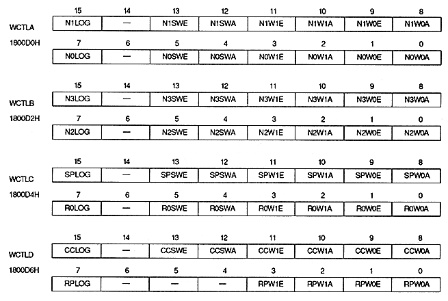

Window logic bit : Logic bit
| N0LOG | 1800D0H | bit 7 | NBG0 in transparency window (Or RBG1) |
| N1LOG | 1800D0H | Bit 15 | For NBG1 (or EXBG) in the transparency window |
| N2LOG | 1800D2H | Bit 7 | Transparency processing window for NBG2 |
| N3LOG | 1800D2H | Bit 15 | Transparency processing window for NBG3 |
| R0LOG | 1800D4H | Bit 7 | Transparency processing window for RBG0 |
| SPLOG | 1800D4H | Bit 15 | For transparent processing window sprites |
| RPLOG | 1800D6H | Bit 7 | For rotation parameter window |
| CCLOG | 1800D6H | Bit 15 | For color operation window |